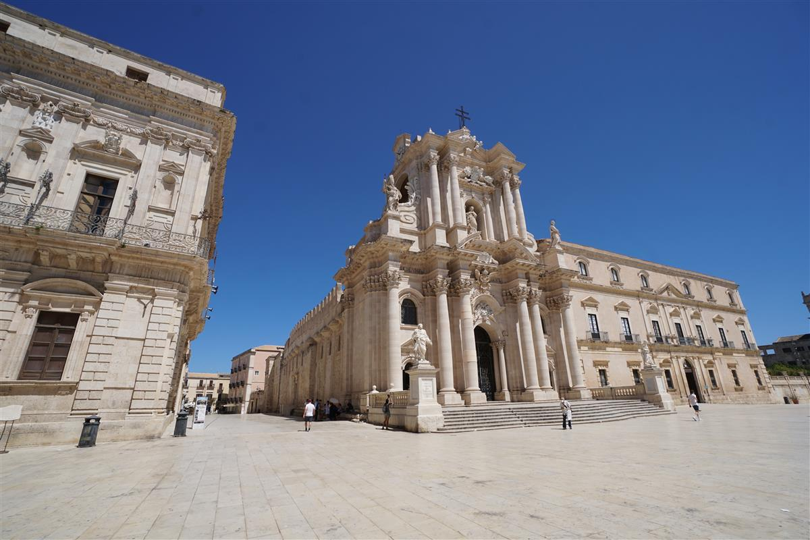
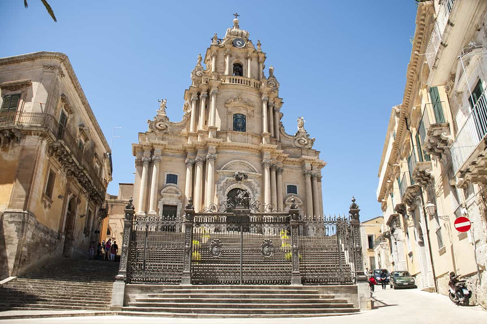
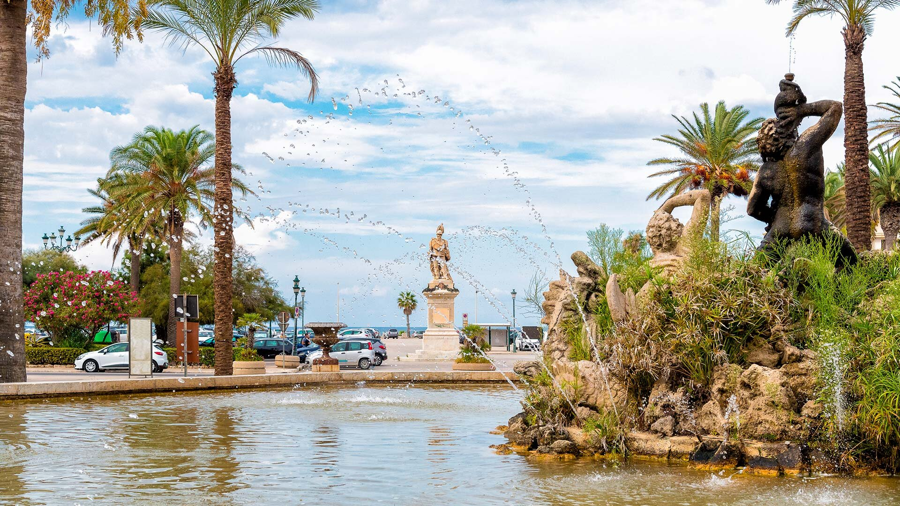
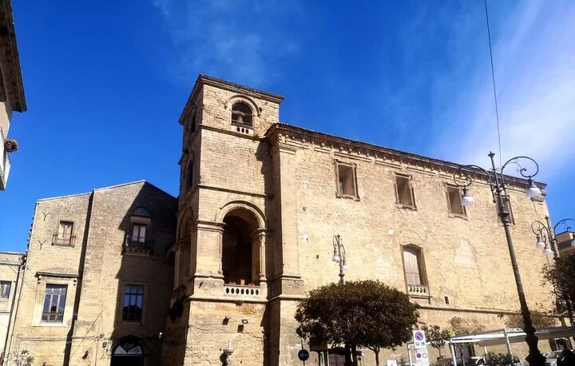

Piazza Duomo
Catania
Piazza del Duomo è il cuore barocco e centro nevralgico di Catania, ricostruita nel XVIII secolo dopo il terremoto del 1693 su progetto di Giovanni Battista Vaccarini.
Piazza del Duomo è il cuore barocco e centro nevralgico di Catania, ricostruita nel XVIII secolo dopo il terremoto del 1693 su progetto di Giovanni Battista Vaccarini.

Piazza Pretoria, situata nel cuore del centro storico di Palermo vicino ai Quattro Canti, è famosa per la monumentale fontana rinascimentale del XVI secolo, realizzata da Francesco Camilliani.

Piazza Duomo a Messina è il cuore storico e monumentale della città, dominata dalla maestosa Cattedrale di Santa Maria, la Fontana di Orione e il campanile dell'orologio astronomico.

Piazza Duomo a Siracusa, situata nel punto più alto dell'isola di Ortigia, è una delle piazze barocche più belle d'Italia e il cuore pulsante del centro storico.

Piazza Duomo è il cuore pulsante di Ragusa Ibla, il quartiere più antico e suggestivo della città, ricostruito in stile barocco dopo il terremoto del 1693.

Piazza Pirandello, situata nel cuore del centro storico di Agrigento, è un luogo emblematico e centrale, noto per ospitare il Palazzo Municipale e la Fondazione Teatro Pirandello.

Nota anche come piazza del Tritone, è un cuore pulsante e storico della città, recentemente riqualificata come pedonale per diventare una vera "Agorà" mediterranea.

Piazza Garibaldi è il cuore storico di Caltanissetta, situata all'incrocio dei corsi principali. È dominata dalla maestosa Cattedrale di Santa Maria la Nova e dalla Chiesa di San Sebastiano.

Piazza Vittorio Emanuele è il cuore pulsante e il principale punto di ritrovo di Enna. Situata lungo la centrale Via Roma, la piazza è un ampio spazio aperto che funge da connessione tra le diverse anime della città.